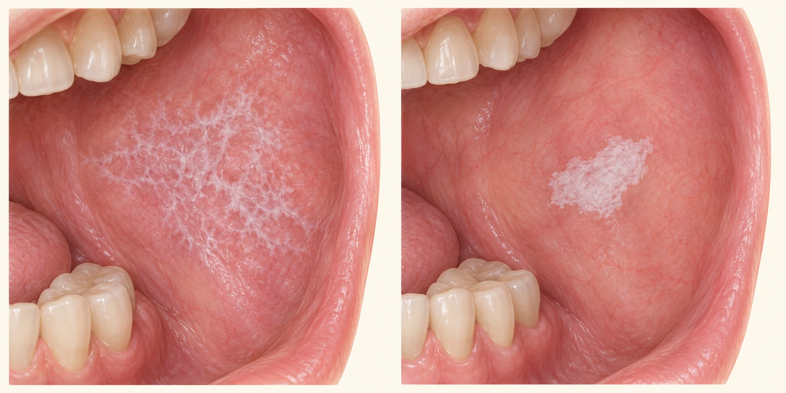

Patienteninformation Mundschleimhaut und Gewebeprobe
Mundschleimhautveränderungen und Gewebeprobe
Eine veränderte Stelle im Mund kann viele Ursachen haben. Wir untersuchen den Befund und besprechen, ob eine kleine Gewebeprobe zur sicheren Einordnung sinnvoll ist.
Eine Überweisung oder Probeentnahme bedeutet nicht automatisch eine Krebserkrankung. Viele Veränderungen sind gutartig oder entzündlich. Die mikroskopische Untersuchung hilft, die Ursache zu klären und behandlungsbedürftige Zellveränderungen oder eine bösartige Erkrankung zu erkennen beziehungsweise auszuschließen.

KI-generierte schematische Illustration, keine Patientenaufnahme. Links: netzartige Zeichnung, wie sie bei oralem Lichen planus vorkommen kann. Rechts: umschriebene weiße Veränderung. Aus dem Aussehen allein lässt sich keine sichere Diagnose ableiten.
Welche Veränderungen wir abklären
Weiße oder weiß-rote Stellen: Eine nicht abwischbare weiße Veränderung kann nach Ausschluss anderer Ursachen als Leukoplakie bezeichnet werden. Das ist zunächst eine klinische Beschreibung, keine Krebsdiagnose. Ob Zellveränderungen vorliegen, zeigt gegebenenfalls erst die Gewebeuntersuchung.
Entzündliche Veränderungen: Oraler Lichen planus, auch Lichen ruber mucosae genannt, kann feine weiße netzartige Linien, Rötungen oder empfindliche offene Stellen verursachen. Er ist nicht ansteckend. Ähnlich aussehende lichenoide Reaktionen können beispielsweise mit Medikamenten oder Kontaktreizen zusammenhängen.
Anhaltende wunde oder rote Stellen: Nicht heilende Geschwüre und unklare rote oder gemischt rote und weiße Veränderungen werden gezielt beurteilt. Auch eine schmerzlose Stelle kann abklärungsbedürftig sein.
Kleine Knoten oder Wucherungen: Dazu gehören beispielsweise reizbedingte Fibrome, papillomartige Veränderungen und Zahnfleischwucherungen (Epuliden). Entferntes Gewebe wird zur feingeweblichen Untersuchung eingesandt.
Weitere Befunde: Neu entstandene oder sich verändernde Pigmentflecken sowie seltene blasenbildende Erkrankungen können eine Probe erfordern. Bei Verdacht auf ein Schleimhautpemphigoid oder einen Pemphigus sind besondere Laboruntersuchungen möglich.
MKG im Carree
Dr. Julia Malik & Dr. Christoph Malik · Darmstadt
Patienteninformation Mundschleimhaut und Gewebeprobe
Wann eine Gewebeprobe sinnvoll ist
Wir beurteilen Aussehen, Tastbefund, Dauer und Verlauf sowie mögliche Reize durch Zähne oder Zahnersatz. Nicht jede Veränderung muss beprobt werden: Bei eindeutigem Reiz, typischen Aphthen oder einer Pilzinfektion kann zunächst eine gezielte Behandlung mit vereinbarter Kontrolle sinnvoll sein. Bei einem verdächtigen Befund wird die Abklärung nicht unnötig verzögert.
Beobachtung, Behandlung einer vermuteten Ursache und Probeentnahme sind je nach Befund unterschiedliche Möglichkeiten. Ein Abstrich kann bestimmte Infektionen nachweisen, ersetzt bei einer verdächtigen Gewebeveränderung aber keine Biopsie. Ohne empfohlene Abklärung kann eine notwendige Behandlung verzögert werden.
So läuft die Probeentnahme ab
Wir besprechen die geeignete Entnahmestelle und prüfen die Wirkung der örtlichen Betäubung. Sie können Druck spüren; bei Schmerzen wird sofort nachbetäubt.
Bei einer Teilprobe wird ein kleines, repräsentatives Gewebestück entnommen. Eine kleine, voraussichtlich gutartige Veränderung kann gegebenenfalls vollständig entfernt werden. Die Entscheidung richtet sich nach Befund und Lage.
Die Blutung wird gestillt. Je nach Stelle schließen wenige Fäden die Wunde; manchmal heilt sie offen. Nicht selbstauflösende Fäden werden nach ein bis zwei Wochen entfernt.
Das Gewebe wird im Labor untersucht. Manchmal sind Zusatzuntersuchungen oder eine weitere Probe notwendig. Die Entnahme allein behandelt nicht automatisch die zugrunde liegende Erkrankung.
Mögliche Risiken
Möglich sind Schmerzen, Schwellung, Bluterguss, Nachblutung, Infektion, Wundheilungsstörung und Narbenbildung. Je nach Entnahmestelle können Gefühls- oder selten Geschmacksstörungen, Verletzungen benachbarter Zähne, Gefäße oder Speicheldrüsengänge sowie vorübergehende Einschränkungen beim Essen oder Sprechen auftreten. Selten bleiben Beschwerden bestehen oder ist eine weitere Behandlung nötig.
Eine kleine Probe zeigt nur den untersuchten Bereich. Bei einem uneindeutigen Ergebnis, Veränderungen im Verlauf oder einem Widerspruch zwischen Untersuchung und Laborbefund kann eine erneute oder zusätzliche Probe sinnvoll sein. Individuelle Risiken erläutern wir anhand Ihrer Entnahmestelle.
Vorbereitung
Bitte nennen Sie alle Medikamente, Allergien, Gerinnungsstörungen, relevante Erkrankungen und frühere Behandlungen der Stelle. Blutverdünnende Medikamente nicht eigenständig absetzen. Änderungen erfolgen nur nach ärztlicher Abstimmung. Bei reiner Lokalanästhesie ist Nüchternheit normalerweise nicht nötig; für Sedierung oder Narkose gelten die gesonderten Vorgaben.
MKG im Carree
Dr. Julia Malik & Dr. Christoph Malik · Darmstadt
Patienteninformation Mundschleimhaut und Gewebeprobe
Betäubung und Komfortmöglichkeiten
Die Probeentnahme erfolgt in der Regel ambulant in örtlicher Betäubung. Weitere Verfahren kommen nur bei individuellem Bedarf infrage; sie sind für eine kleine Gewebeprobe gewöhnlich nicht erforderlich.
Methode
Beschreibung
Kosten
Lokalanästhesie Standard
Wach, kein Schmerz – nur Druck. Bei Schmerzwahrnehmung wird sofort nachbetäubt. ÖPNV nach Hause erlaubt.
Kassenleistung (GKV) bzw. im Behandlungspaket inkl.
Orale Sedierung (Tavor) Komfort
Tablette ca. 60 Min. vorher. Kein Schlaf, deutliche Stressreduktion. Vitalparameter werden überwacht. Begleitperson notwendig, 24 Std. nicht verkehrsfähig. Abholung aus der Praxis verpflichtend.
ca. 80 € Eigenleistung
Dämmerschlaf (i.v.) Komfort
Professionelles Narkoseteam, medikamentös an der Schlaf-Wachgrenze, kooperativ, meist keine Erinnerung. Postop. Aufwachraum mit Vitalüberwachung. Nur dienstags. Nüchtern ab 22 Uhr nichts essen, ab 6 Uhr nichts trinken. Abholung aus der Praxis verpflichtend.
ca. 230 € Eigenleistung
Vollnarkose Komfort
Echter Tiefschlaf, Beatmung über die Nase in die Lunge, keine Wahrnehmung des Eingriffs. Postop. Aufwachraum mit Vitalüberwachung. Nur dienstags. Nüchtern wie Dämmerschlaf. Abholung aus der Praxis verpflichtend.
ca. 450 € Eigenleistung
Standard ist die Lokalanästhesie – für die allermeisten Patienten vollkommen ausreichend. Sedierung ist eine optionale Komfortzubuchung als Eigenleistung. Die Wirkung wird vor Beginn geprüft; bei Schmerzen wird sofort nachbetäubt. Nach Sedierung oder Narkose sind Abholung aus der Praxis und 24 Stunden Verzicht auf aktive Teilnahme am Straßenverkehr erforderlich. Individuelle Nüchternanweisungen haben Vorrang.
Risiken der Betäubung
Örtliche Betäubungsmittel können Blutergüsse, vorübergehende oder selten anhaltende Gefühlsstörungen, allergische Reaktionen sowie bei unbeabsichtigter Gefäßinjektion Kreislauf- oder Herzrhythmusstörungen verursachen. Sedierung und Narkose können Atmung und Kreislauf beeinträchtigen; möglich sind außerdem Übelkeit, Erbrechen, Aspiration und Verletzungen bei der Atemwegssicherung. Schwere Komplikationen sind selten. Hierzu erfolgt bei Bedarf eine gesonderte individuelle Aufklärung.
Kosten
Die medizinisch notwendige Abklärung und Gewebeuntersuchung werden bei gesetzlich Versicherten in der Regel von der Krankenkasse übernommen. Bei privater Versicherung richtet sich die Erstattung nach dem Vertrag. Über mögliche zusätzliche Eigenleistungen, insbesondere optionale Komfortleistungen, informieren wir Sie vorab.
MKG im Carree
Dr. Julia Malik & Dr. Christoph Malik · Darmstadt
Patienteninformation Mundschleimhaut und Gewebeprobe
Nach der Probeentnahme
Solange die Betäubung wirkt, nicht kauen und nichts Heißes trinken: Es besteht die Gefahr von Biss- und Hitzeverletzungen. Danach zunächst weiche, lauwarme Kost wählen und die Wunde schonen.
Am Eingriffstag nicht kräftig spülen, saugen oder an der Wunde ziehen. Zähne weiter vorsichtig reinigen; die Entnahmestelle nicht scheuern. Eine antiseptische Mundspüllösung nur nach unserer Anweisung verwenden.
Körperliche Anstrengung, Alkohol und starke Hitze zunächst meiden. Rauchen und Dampfen stören die Heilung; während der Wundheilung darauf verzichten. Den Zeitraum der Schonung stimmen wir auf den Eingriff ab.
Bei leichter Nachblutung eine saubere Kompresse etwa 20 Minuten gleichmäßig aufdrücken, soweit die Stelle gut zugänglich ist. Bei anhaltender oder stärkerer Blutung sofort Kontakt aufnehmen.
Beschwerden behandeln
Leichte Schmerzen oder Schwellung können einige Tage auftreten. Schmerzmittel nur nach individueller Empfehlung verwenden. Die folgende Übersicht gilt für geeignete Erwachsene; bei Kindern, Schwangerschaft, geringem Körpergewicht, Leber-, Nieren- oder Magenerkrankungen müssen Mittel und Dosis angepasst werden.
Mittel
Einnahme nach Freigabe
Hinweis
Ibuprofen 600 mg
Alle 6–8 Stunden, höchstens 3-mal täglich
Nicht nüchtern; Gegenanzeigen beachten
Paracetamol 500–1000 mg
Alternativ/ergänzend alle 6 Stunden; höchstens 4 g/Tag
Nur bei geeignetem Gewicht und gesunder Leber; keine Doppelmedikation
Novalgin-Tropfen
Bei stärkeren Schmerzen bis zu 4 × 30 Tropfen täglich, nur nach Verordnung
Dosierung für 500 mg/ml; Verordnung hat Vorrang
Kein Aspirin/ASS als zusätzliches Schmerzmittel verwenden, da es Nachblutungen begünstigt. Ärztlich verordnetes ASS nicht selbst absetzen. Bei Fieber, Schüttelfrost, Halsschmerzen oder neuen schmerzhaften Schleimhautstellen unter Novalgin das Mittel absetzen und sofort ärztlich abklären lassen.
Wann Sie sich melden sollten
Bei zunehmenden Schmerzen oder Schwellung, Fieber, Eiter, anhaltender Blutung oder einer neuen deutlichen Gefühlsstörung bitte zeitnah melden. Rasch zunehmende Schwellung, Atemnot oder starke Schluckbehinderung erfordern sofortige Hilfe.
Bei Problemen nach der Probeentnahme: Praxis 06151 786540; außerhalb der Praxissprechzeiten +49 151 10437450. Falls nicht erreichbar: zahnärztlicher Notdienst 01805 60 70 11. Bei lebensbedrohlicher Notlage, Atemnot, starker Schluckbehinderung oder rascher Schwellung von Mundboden, Hals oder Zunge: 112.
MKG im Carree
Dr. Julia Malik & Dr. Christoph Malik · Darmstadt
Patienteninformation Mundschleimhaut und Gewebeprobe
Der Befund und die nächsten Schritte
Wir vereinbaren, wie und wann Sie das Ergebnis erhalten. Zusatzuntersuchungen können die Bearbeitung verlängern. Bitte melden Sie sich, wenn bis zum vereinbarten Zeitpunkt keine Rückmeldung erfolgt ist. Keine Nachricht bedeutet nicht automatisch einen unauffälligen Befund.
Bei einem gutartigen Befund besprechen wir, ob weitere Behandlung oder Kontrollen nötig sind. Entzündliche Erkrankungen benötigen gegebenenfalls eine längerfristige Betreuung. Bei Zellveränderungen oder einem bösartigen Befund erläutern wir zeitnah die weiteren Schritte und organisieren die erforderliche Behandlung.
Häufige Fragen
Ist eine Probeentnahme schmerzhaft? Mit wirksamer örtlicher Betäubung ist sie in der Regel gut verträglich. Druck oder Zug können wahrnehmbar sein; Schmerzen sollen Sie sofort mitteilen.
Ist danach alles erledigt? Nicht immer. Besonders bei Lichen planus und Leukoplakien können auch nach einem zunächst beruhigenden Ergebnis regelmäßige Kontrollen sinnvoll sein. Umfang und Abstände richten sich nach dem Befund.
Was muss ich selbst beobachten? Neue Verhärtung, Wachstum, spontane Blutung, anhaltende Wundstellen oder zunehmende Beschwerden bitte melden. Nicht erst den nächsten Routinetermin abwarten.
Ist die Erkrankung ansteckend? Lichen planus ist nicht ansteckend; Leukoplakie ist keine Infektionsdiagnose. Bei anderen Veränderungen hängt dies von der jeweiligen Ursache ab.
Checkliste für das Gespräch
Sind Entnahmestelle, Ziel und mögliche Alternativen erklärt?
Sind Medikamente, Blutverdünner, Allergien und Erkrankungen angegeben?
Sind Betäubung, individuelle Risiken und mögliche Eigenleistungen besprochen?
Sind Wundkontrolle und Rückmeldung zum Laborbefund vereinbart?